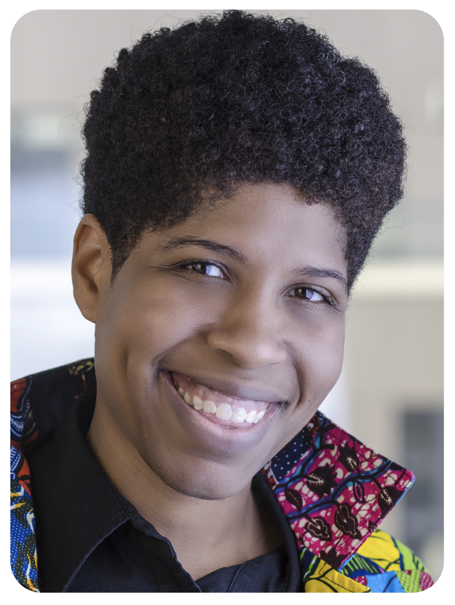

Emma Benn
Emma Benn
Dr. Benn got her PhD from Columbia University, Mailman School of Public Health, and is now an Associate Professor in the Center for Biostatistics and Department of Population Health Science and Policy at the Icahn School of Medicine at Mount Sinai (ISMMS). Additionally, she is the founding Director of Center for Scientific Diversity and Associate Dean of Faculty Well-being and Development at ISMMS.
Topics covered
Dr. Benn is a biostatistician particularly interested in health disparities research. Her work includes studies on COVID-19, HIV, skin lightening, and pregnancy. Her statistical knowledge allows for nuanced insight into disparities due to race, gender, and sexual orientation.
Additionally, Dr. Benn has worked to diversify her own community by instituting programming designed to train and recruit historically underrepresented scholars all across the spectrum from undergraduates to faculty colleagues.
Relevant work
Gabriela Cedillo, Mary Catherine George, Richa Deshpande, Emma K.T. Benn, Allison Navis, Alexandra Nmashie, Alina Siddiqui, Bridget R. Mueller, Yosuke Chikamoto, Linda Weiss, Maya Scherer, Alexandra Kamler, Judith A. Aberg, Barbara G. Vickrey, Angela Bryan, Brady Horn, Angela Starkweather, Jeffrey Fisher, Jessica Robinson-Papp. “Toward Safer Opioid Prescribing in HIV care (TOWER): a mixed-methods, cluster-randomized trial”. Addiction Science & Clinical Practice, 17 (28), 2022.
Mueller BR, Lawrence S, Benn E, Nirenberg S, Kummer B, Jette N, George MC, Robinson-Papp J. “Disparities in telehealth utilization in patients with pain during COVID-19.” Pain Rep. 2022 Apr 14;7(3):e1001.
Benn, E. K. T., Deshpande, R., Dotson-Newman, O., Gordon, S., Scott, M., Amarasiriwardena, C., Khan, I. A., Wang, Y. H., Alexis, A., Kaufman, B., Moran, H., Wen, C., Charles, C. A. D., Younger, N. O. M., Mohamed, N. & Liu, B., Skin Bleaching Among African and Afro-Caribbean Women in New York City: Primary Findings from a P30 Pilot Study. Dermatology and Therapy, 9, 2019.